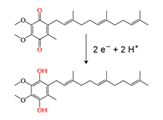

Unit 1: Biochemistry
Activity 1: Chemistry of Life
Content
Biological Reactions
There tends to be patterns in the way that biological molecules react. Learning some of the basic reactions that occur in biological systems is important to understanding biochemistry.
Neutralization Reaction
This type of reaction is between an acid and a base. The simplest and easiest type of neutralization is when a molecule of water is removed and a salt is formed.
Mg(OH)2 + HCl MgCl2 + HOH
base + acid salt + water
In the above reaction, hydrochloric acid (or stomach acid) is neutralized by magnesium hydroxide (found in antacids) to make a salt (magnesium chloride) and water. This reaction is how substances such as “Milk of Magnesia” work in order to reduce heartburn which is caused by stomach acid.
Condensation Reaction
There are many types of condensation reactions. The general concept here is that two small molecules come together (or condense) to form a large molecule. In this process, atoms are removed when two small molecules join together to make 1 big molecule. Condensation reactions are how synthetic and natural polymers are formed. The example below shows how a strong synthetic polymer, called Kevlar, is formed from its monomers, 1,4 – pheylene-diamine and terephthaloyl chloride.
Polymerization of Kevlar |
In this condensation reaction, H and Cl are removed to connect the two molecules together. This process is repeated thousands of times in order to make Kevlar. Because Kevlar is made from many of the same molecules joined together, it is called a polymer. The individual repeating units in the polymer are called monomers. |
Did you know?
 |
Kevlar is used to make bullet-proof vests. The bonds formed in the above reaction are very strong. In addition, the long molecules formed in the above polymerization can react with each other to form very strong cross-links. For this reason, Kevlar is said to be 5 times stronger than steel on a gram per gram basis. |
|---|
Dehydration Reactions
Dehydration reactions are a form of condensation reaction where the molecule that is removed to connect the two smaller molecules is water. This is a common reaction in living systems.
| 2O." width="350" height="120" hspace="0" vspace="3" border="0"> Dehydration Reaction – Formation of a Peptide bond |
In this condensation reaction, two amino acids (the monomer of proteins) come together by removing a molecule of H2O and forming a peptide bond. This is a covalent bond that connects two amino acids. |
| 2O and forming an ester." width="450" height="83" hspace="0" vspace="3" border="0"> Dehydration Reaction – Formation of An Ester |
In this condensation reaction, a carboxylic acid and an alcohol are joined by removing a molecule of H2O and forming an ester (- COOC-). |
Did you know?
| |
Dehydration reactions are very important in building proteins, lipids, carbohydrates, and nucleic acids. |
|---|
Hydrolysis Reactions
Hydrolysis reactions are the opposite of dehydration reactions. The concept here is to cut (or lyse) a large molecule into smaller molecules using water. This is a very important reaction in living systems. This is how your body breaks down fats, proteins, carbohydrates, nucleic acids and many other substances.
| 2O." width="189" height="269" hspace="0" vspace="3" border="0"> Hydrolysis of a Peptide Bond |
In this hydrolysis reaction, a peptide bond is broken down into amino acids by using a molecule of H2O. Hydrolysis reactions are the reverse of dehydration reactions. To form large molecules (or macromolecules), H2O is formed. In order to break down molecules such as fat, H2O is added across a bond. |
Redox Reactions
Redox reactions are also known as oxidation-reduction reactions. In living systems, redox reactions often involve the transfer of free energy from one molecule to another. Oxidation is when an atom or molecule loses electrons and reduction is when an atom or molecule gains electrons. A molecule that loses the electron is said to be oxidized. A molecule that gains the electron is said to be reduced. However, in biology, molecules are large and one can not count the number of electrons within a molecule. A simpler way to identify a redox reaction is when a hydrogen atom is lost /gained, or an oxygen atom is lost /gained. When an oxygen atom is lost or a hydrogen atom is gained, reduction occurs. When an oxygen atom is gained or a hydrogen atom is lost, that molecule is said to be oxidized.
 Tip
Tip
Oxidation = lose an e-, remove a hydrogen atom or add an oxygen atom
Reduction = gain an e-, add a hydrogen atom or remove an oxygen atom
Oxidation – by removing 2H (2e-) |
Both of these reactions are redox reactions. On the left, 2e-(electrons) are removed so the molecule is said to be oxidized. On the right, 2e- are added, so the molecule is said to be reduced. |
 Reduction – by adding 2H (2e-) |
Oxidation and reduction are reverse reactions of each other as seen in the following example.
Redox of NAD – nicotinamide adenine dinucleotide |
NAD – nicotinamide adenine dinucleotide is an electron carrier used by the cell. It can carry two electrons and hydrogen from one part of the cell to another where it can release them. When it picks up electrons from hydrogen, it is said to be reduced. When it delivers the electrons and hydrogen to another part of the cell, it is said to be oxidized. This is a very important redox reaction that you will learn more about in the next unit. |
Did you know?
| |
A good way to remember redox reactions is the acronym LEO the Lion says GER. LEO = lose an electron, oxidation, GER = gain an electron, reduction. |
|---|
 |
Learn more about the different reactions. |
|---|
 Portfolio:
Portfolio:
Notes help prepare you for tests. Keep all of your notes in your portfolio. Be prepared to submit your portfolio notes and organizers to your teacher for assessment at various times during the course.
Use your portfolio to research the following: condensation reactions, hydrolysis dehydration reactions and redox reactions.
This is a disclaimer. External Resources will open in a new window. Not responsible for external content.
Unless otherwise indicated, all images in this Activity are from the public domain or are © clipart.com or Microsoft clipart and are used with permission.